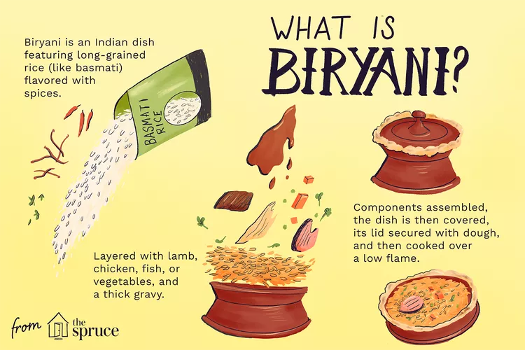

Briyani
Simply put, biryani is a spiced mix of meat and rice, traditionally cooked over an open fire in a leather pot. It is combined in different ways with a variety of components to create a number of highly tasty and unique flavor combinations. The word “biryani” itself comes from the word “birian,” a Persian term which translates to “fried before cooking. ” Indeed, the roots of this dish have been traced by notable historians to modern day Persia, with appearances in notes under various names as early as 2 CE. The biryani recipe was then much simplified in order to keep it viable during travel.
Once the dish reached India, it blossomed into something entirely new. The story goes that Mumtaz Mahal, a Queen of Shah Jahan, visited an army barrack and found the soldiers there to be heavily undernourished. She demanded the barrack’s cook provide the soldiers with a dish that was nutritious and had all the meat, rice, and spices needed to restore their energy. According to legend, this is how the dish first came to India. As various regions across Southern Asia adopted the recipe, it grew and changed to express cultures’ values; leading to the diverse selection of biryani dishes that exist today.
Cooking Methods
Just as biryani’s components have changed over time to suit those making it, so have the cooking methods. There are as many ways to cook the dish as there are to enjoy it, but three methods remain the most prominent.
- Dum: Parboiled rice and raw marinated meat are placed into a thick-bottomed pot, sealed with dough and left to cook on low heat for hours.
- Pukka: Rice and meat are cooked separately, then combined and steamed.
- Kacchi: Raw meat and raw rice are cooked together, dum style.
Types of Biryani
- Hyderabadi biryani
- Dindigul biryani
- Ambur biryani
- Malabar Biriyani
- Calcutta/Kolkata biryani
- Mughlai biryani
HEALTH BENEFITS OF BRIYANI
- PROTEIN PACKED RECIPE
- IT ASSISTS IN DIGESTION
- THE ANTI-INFLAMMATORY PROPERTIES OF TURMERIC
- THE NIACIN, POTASSIUM, AND RIBOFLAVIN PROPERTIES OF RED CHILI POWDER
- CUMIN CONTROLS BLOOD SUGAR LEVELS
- RICE PROVIDES FIBER THAT BODY REQUIRES
- GINGER - GARLIC & ONIONS CONTAIN SULFUR COMPOUNDS LIKE ALLICIN, SELENIUM COPPER MANGANESE AND VITAMIN- B6 & VITAMIN- C
- MINT LEAVES HELP IN IRRITABLE BOWEL SYNDROME
- POWER OF EGGS